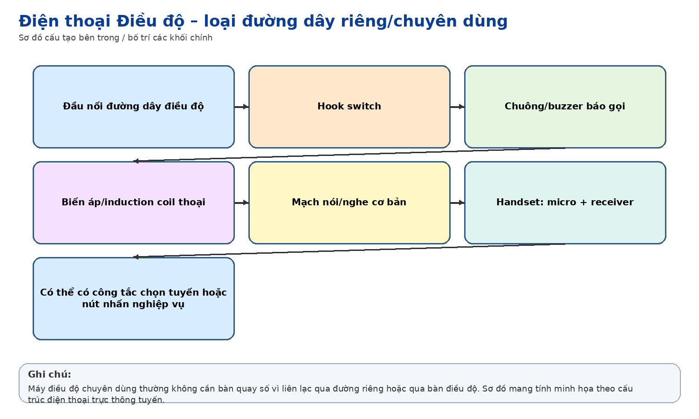
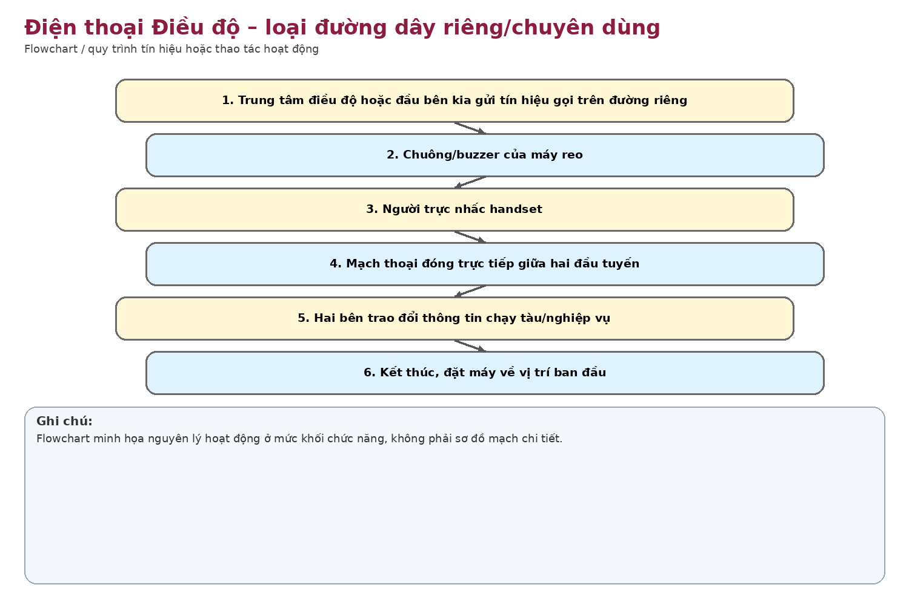

Nhận dạng & niên đại
Công dụng
Công dụng chung
Điện thoại chuyên dùng trên một mạch điều độ hoặc đường dây điểm-điểm, ưu tiên thao tác nhanh và tin cậy hơn chức năng quay số thông thường.
Trong thông tin tín hiệu đường sắt
Phục vụ liên lạc nghiệp vụ chạy tàu/điều độ giữa các vị trí đã định sẵn như phòng điều độ, ga, trực ban hoặc điểm kỹ thuật.
Phạm vi làm việc
Thiết kế chức năng đơn giản giúp giảm thao tác và phù hợp liên lạc nghiệp vụ cố định.
Cấu tạo bên trong

Handset; hook switch; mạch thoại/biến áp cảm ứng; chuông/báo gọi; cọc đấu tuyến. Ảnh không thấy bàn quay số hoạt động, phù hợp với cấu hình đường dây chuyên dụng.
Cách thức hoạt động

Máy nối trực tiếp vào mạch điều độ hoặc qua tổng đài điều độ. Khi có tín hiệu gọi, chuông/báo tác động; nhấc handset đóng mạch thoại. Không nhất thiết phải quay số vì đích liên lạc được xác định bởi mạch/tổng đài.
Thông số kỹ thuật
Thông số chính
Chưa thể chốt loại nguồn (common battery/local battery), điện áp chuông hoặc trở kháng khi chưa mở máy và đọc ký hiệu.
Nguồn điện / cấp nguồn
Khả năng cấp nguồn từ tổng đài/đường dây điều độ; cần kiểm tra mạch thực tế.
Giá trị lịch sử – trưng bày
Là hiện vật có ý nghĩa trực tiếp với nghiệp vụ đường sắt vì phản ánh mạng điện thoại điều độ chuyên dùng trước thời kỳ điều độ số/IP.
Tình trạng quan sát
Máy màu xám/đen, nhãn “Máy điện thoại Điều độ”; vị trí mặt trước có đĩa tròn nhưng không thấy cơ cấu quay số hoàn chỉnh.
Ảnh hiện vật
Xác minh thêm & nguồn tham khảo
Căn cứ mốc sử dụng tại Việt Nam/ĐSVN:
Cao
về vai trò “Điều độ” theo nhãn; thấp về mốc thời gian.